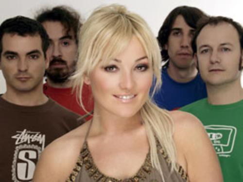
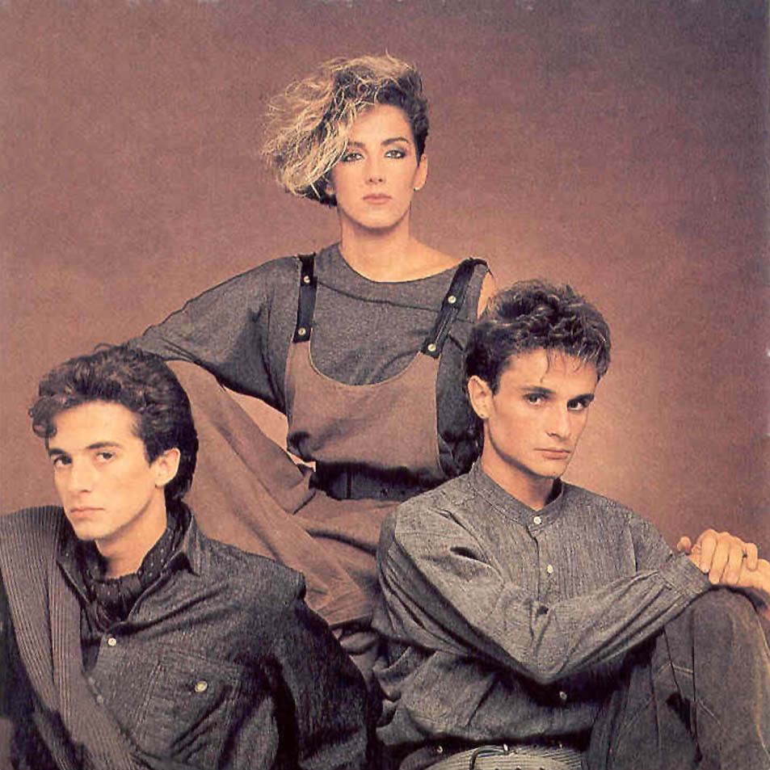
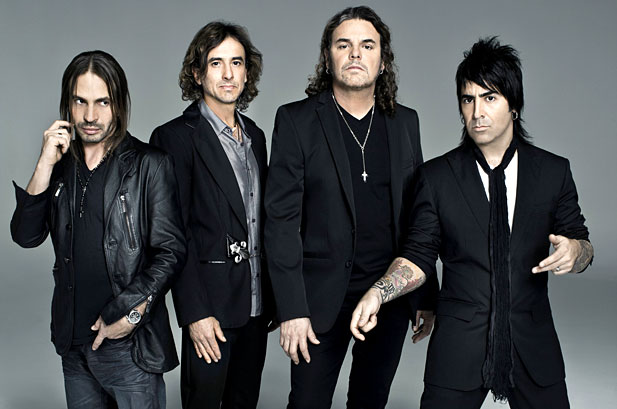
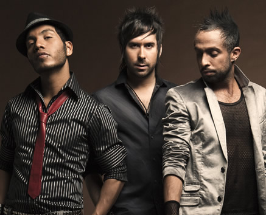

GRUPOS MUSICALES
| LA OREJA DE VAN GOGH |  |
|---|
|  | Es un grupo musical originario de San Sebastián, España. Su trayectoria en el mundo de la musica comenzó formalmente en 1996. La banda nació formada por Pablo Benegas, Álvaro Fuentes, Xabi San Martín, Haritz Garde y la vocalista Amaia Montero.2 3 ésta última abandonó el grupo en 2007 para iniciar su carrera en solitario. Desde 2008 Leire Martínez pone voz al grupo. |
| MECANO | |
|---|
 | Fue un grupo español de música pop, activo entre 1981 y 1992, periodo al que hay que sumar una fugaz reaparición en 1998, que duró apenas ocho meses a partir de la edición de un doble disco recopilatorio que incluía siete nuevos temas grabados para la ocasión
El grupo estaba formado por Ana Torroja y los hermanos Nacho y José María Cano. Fuera del grupo, pero parte integrante de la banda, tanto para las sesiones de estudio como para los directos, estuvieron grandes músicos entre bajistas y bateristas entre los que destacan Arturo Terriza, Manolo Aguilar y los bateristas Ángel Celada y Óscar Astruga. |
| MANÁ | |
|---|
 | Es una banda mexicana de rock en español.Está formada por Fernando Olvera (Guitarra rítmica, armónica y voz), Juan Calleros (Bajo), Alejandro González (Batería y voz) y Sergio Vallón (Guitarra líder y voz).El grupo ha ganado cuatro premios Grammy, siete Premios Grammy Latinos, cinco MTV Video Music Awards Latinoamérica, cinco Premios Juventud, nueve Premios Billboard de la Música Latina y trece de los Premios Lo Nuestro. |
| CAMILA | |
|---|
|  | es una banda mexicana de Pop rock, formado en el año 2005 por Mario Domónguez Zarzar, el productor, compositor y cantante, Pablo Hurtado Abaunza, el guitarrista y compositor y Samuel Parra Cruz vocalista y compositor (Que posteriormente en el año 2013 se separo de la banda para formar su carrera como solista; aclarando que volver�a para grabar el cuarto sencillo de la banda). |